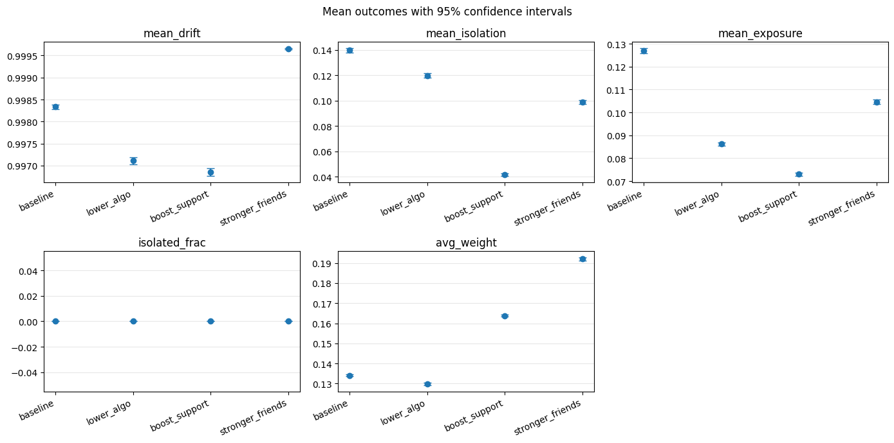

Abstract
I built an agent-based model of feedback between social isolation, algorithmic exposure and weakening friendship ties. Monte Carlo experiments compare three interventions on a common network model. Increasing the effectiveness of social support produced the largest reduction in simulated isolation, while saturation of ideological drift exposed an important limitation of the outcome measure.
From individual rules to network behavior
The baseline uses 800 agents on a sparse friendship network with an expected degree near twelve. Isolation affects exposure; exposure affects ideological drift; divergence and isolation weaken ties. The model runs for 80 time steps, and repeated runs describe variation under those assumptions.

Interventions under common assumptions
I separately reduced maximum amplification from 0.60 to 0.35, increased support effectiveness from 0.25 to 0.40, and strengthened friends’ corrective influence from 0.60 to 0.85. Support produced the largest reduction in isolation in these simulations. These parameter changes are scenario experiments, not empirically estimated treatment effects.
A result that challenges the model
Mean drift often approached its upper bound of one. Once an outcome saturates, it becomes less useful for distinguishing interventions. This motivates revisiting the state dynamics and calibration before using the model to inform policy.
Explore the work
The original materials retain the calculations, assumptions and supporting discussion behind this overview.
The readable analysis preserves existing notebook content with code and long output collapsed. Models were not rerun for this presentation; interpretation notes appear at the top of each preview.